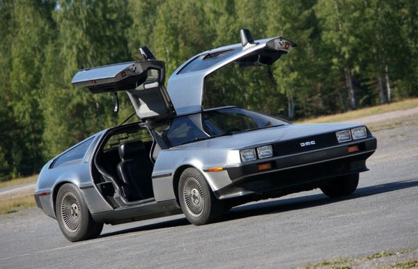

| Engine options: |
2.85L V6 PRV engine |
|---|---|
| Layout: |
Rear-engine Rear-wheel-drive |
| Production: | 1981-1982 |
| Dimensions: |
Length: 4,267 mm Width: 1,988 mm Curb Weight: 1,233 kg |
| Best known for: | Movies: Back to the future |
History
The DMC DeLorean is a rear-engine two-passenger sports car manufactured and marketed by John DeLorean's DeLorean Motor Company (DMC) for the American market from 1981 until 1983—ultimately the only car brought to market by the fledgling company. The DeLorean is sometimes referred to by its internal DMC pre-production designation, DMC-12. However, the DMC-12 name was never used in sales or marketing material for the production model. Despite the car having a reputation for poor build quality and an unsatisfactory driving experience, the DeLorean continues to have a strong following driven in part by the popularity of Back to the Future.